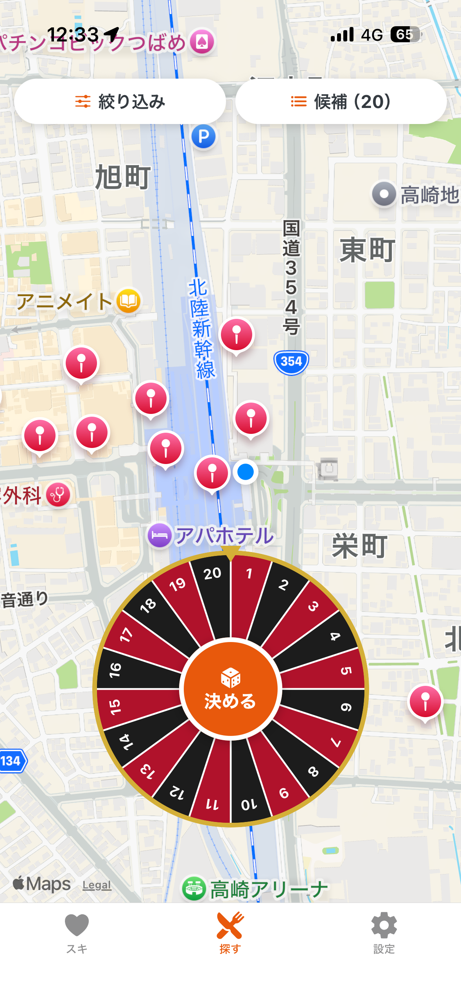
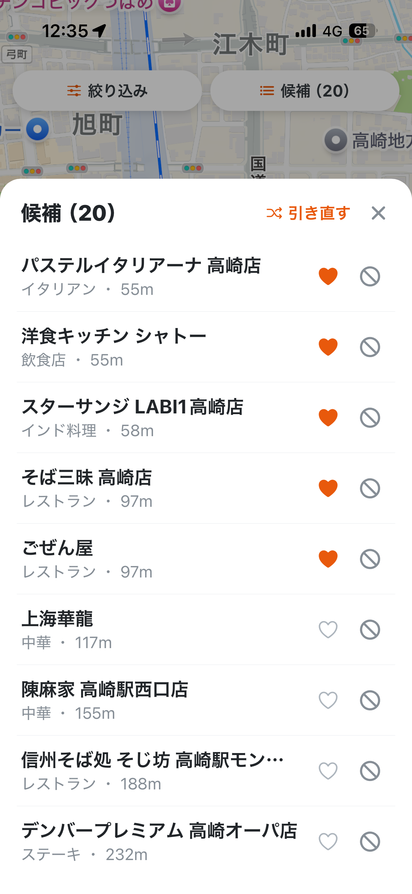

外食したいけど、店が決まらない。そんなときは「ルーレット飯」。近所のお店から、今日の一軒をえいっと選びます。
※ iOS / Android 向けに準備中です。
Scene
お腹は空いた。でも何食べるか思いつかない。そんな迷いを、ルーレットが断ち切ります。
「どこでもいい」がぶつかる夜に。誰のせいでもなく、ルーレットが決めてくれます。
行きつけ以外も候補に。近所の知らなかった一軒に出会えるかもしれません。
How to
現在地から300m〜2kmで、探す範囲を指定。歩ける距離に絞れます。
「決める」を押すと、近所の候補からルーレットがくるくる。今日の一軒が決まります。
決まったお店へ、そのまま地図アプリで案内。あとは食べるだけ。
Screens

(screenshot1.png)';">
(screenshot2.png)';">Features
「近くの飯」がコンセプト。歩いて行ける範囲から選べます。
ラーメン・和食・寿司・カフェなど、気分でジャンルを指定できます。
好きな店はお気に入りに、気が乗らない店は候補から外せます。
決まった店へ、AppleマップかGoogleマップでナビ。
最終更新日：2026年7月11日
「ルーレット飯」（以下「本アプリ」）は、ユーザーのプライバシーを尊重します。本アプリにおける情報の取り扱いについて、以下のとおり定めます。
本アプリは、現在地周辺の飲食店を検索するために、ユーザーの位置情報を利用します。位置情報は、店舗検索のために Google Maps Platform（Google の提供するサービス）へ送信され、Google のプライバシーポリシーに従って取り扱われます。
本アプリの運営者は、ユーザーの位置情報、ルーレットの結果、および検索・利用の履歴を、収集・保存・閲覧することは一切ありません。
お気に入り、除外リスト、利用履歴などの情報は、ユーザーの端末内にのみ保存され、外部のサーバーへ送信されることはありません。これらの情報は、ユーザーご自身の操作でいつでも削除できます。
本アプリは、店舗情報の取得に Google Maps Platform を利用しています。当該サービスの情報の取り扱いについては、Google のプライバシーポリシーをご確認ください。
本ポリシーに関するお問い合わせは、下記の連絡先までご連絡ください。
連絡先：okuapps.0607@gmail.com
本ポリシーの内容は、必要に応じて変更されることがあります。変更後の内容は、本ページに掲載した時点から適用されます。